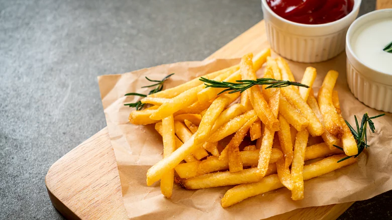

French Fries

Description
The best french fries of your life are 30 minutes away. This recipe was proudly passed down for 3 generations and now you can share with your significant others.
Only a few economic ingredients and a little patience is all you need to go from hungry to happy in under an hour. Let's jump in and get the ball rolling!
Ingredients
- Idaho potatoes
- Vegetable oil
- Salt
- Pepper
- Rosemary
Steps
- Cut potatoes into equal sized pieces to promote even cooking
- Heat pan and add enough oil to cover surface. Wait until oil starts gently bubbling
- Add fries into pan and sautee in pan
- Stir the fries every couple minutes so they are evenly cooked. If you see one side is white
and other is brown place white side on pan to make it as brown. Consistancy and balance is key.
- Add salt and pepper to taste
- Garnish with rosemary
Return Back To Main Menu